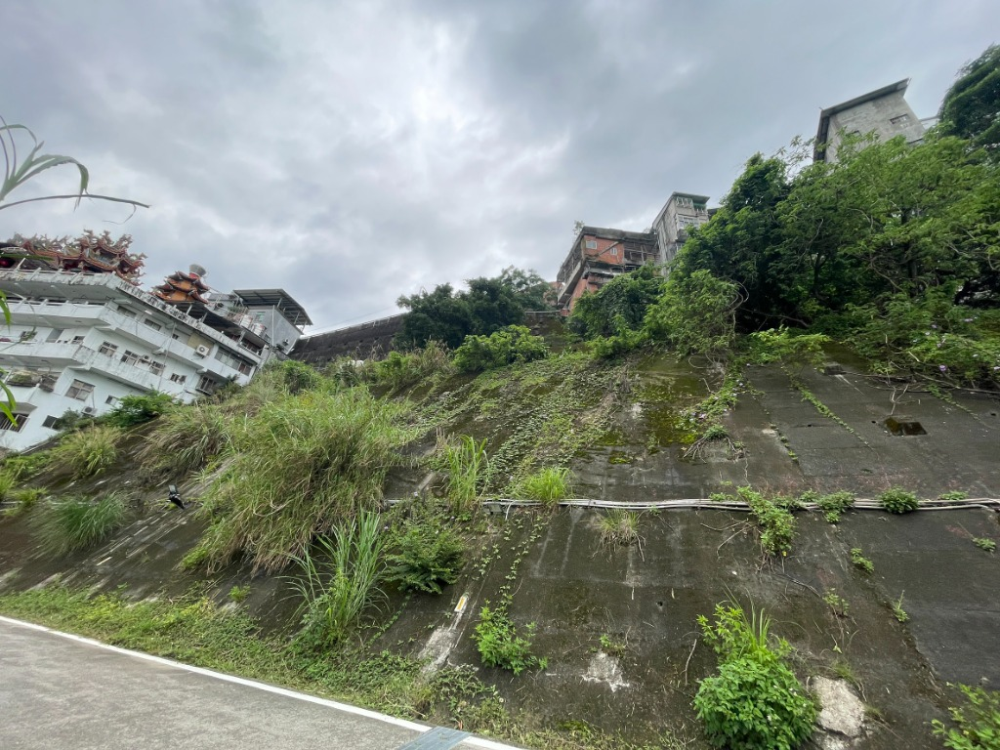
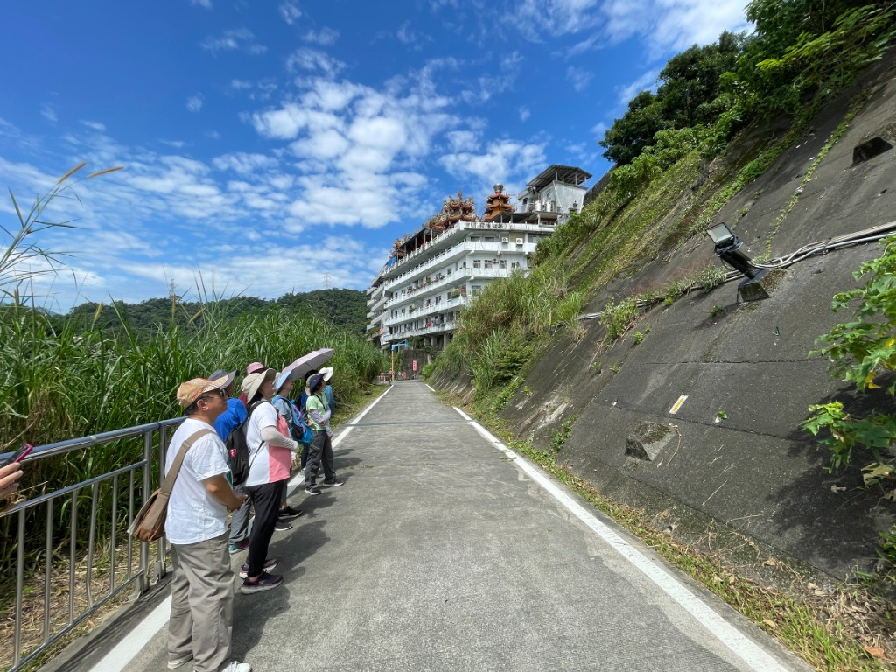
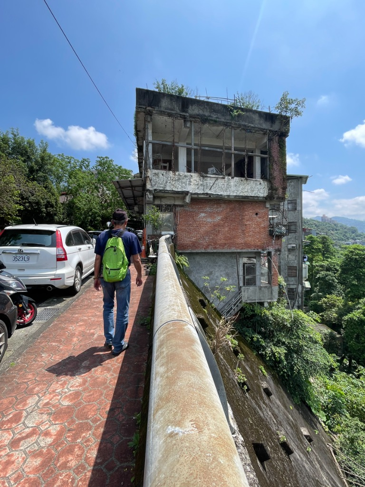
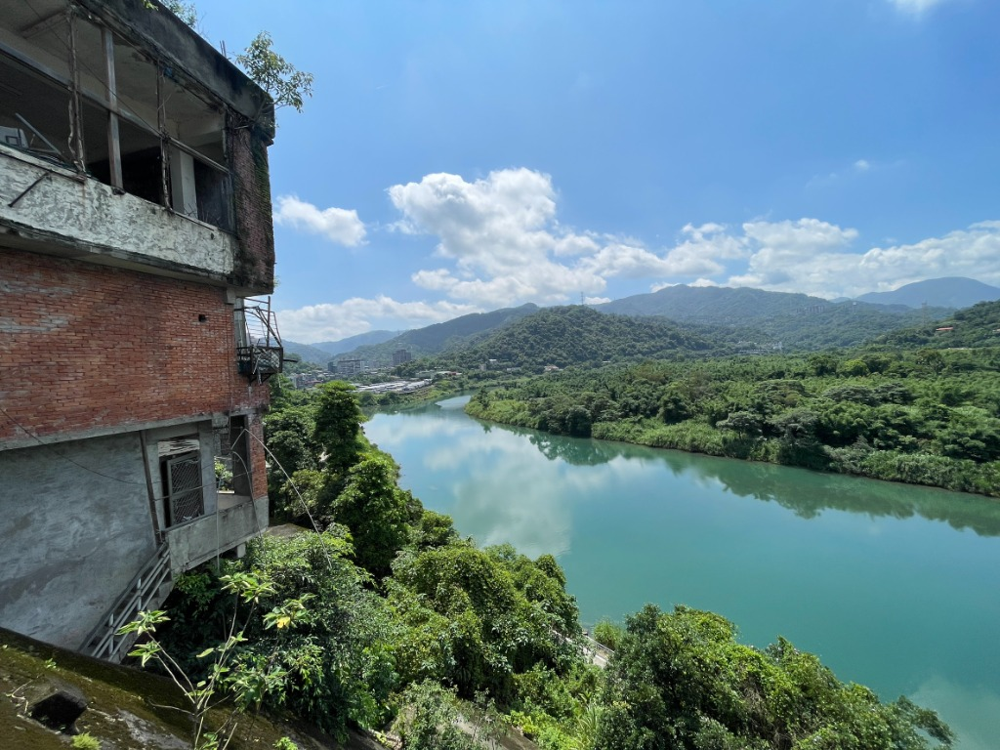
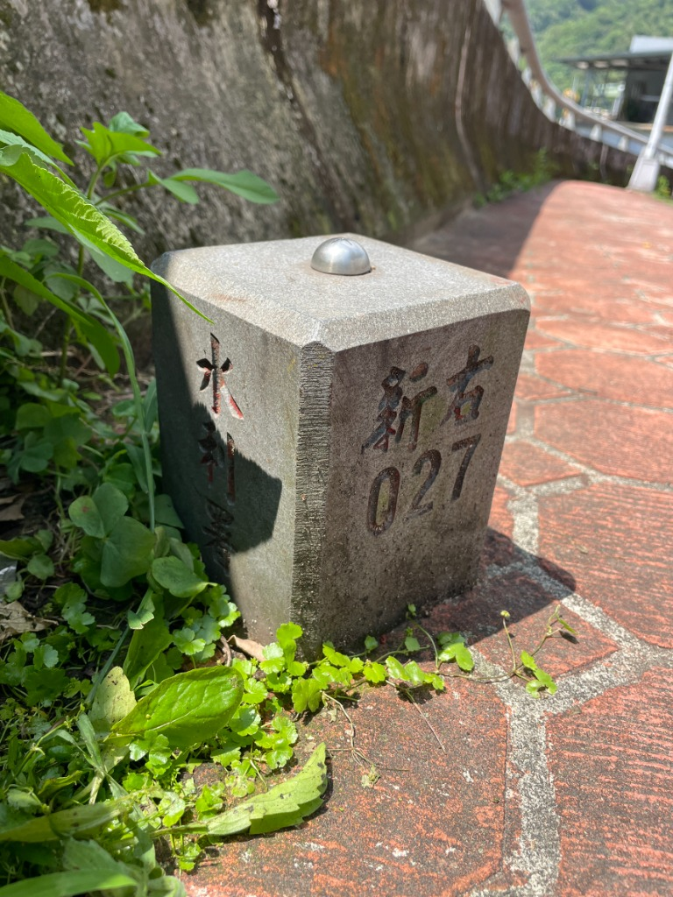
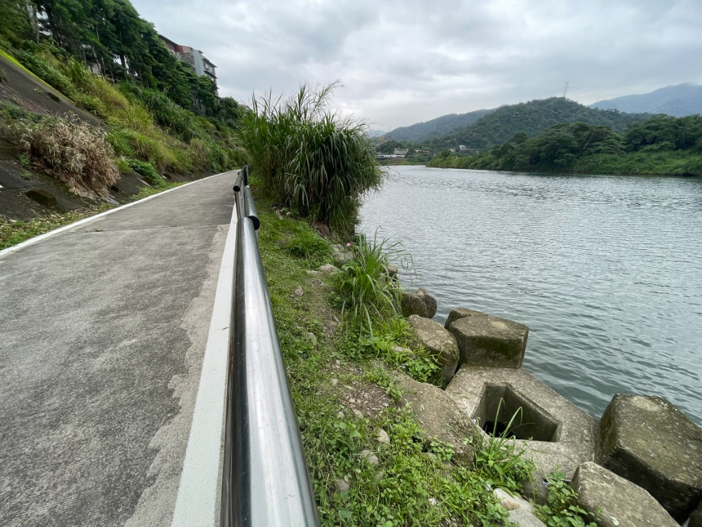
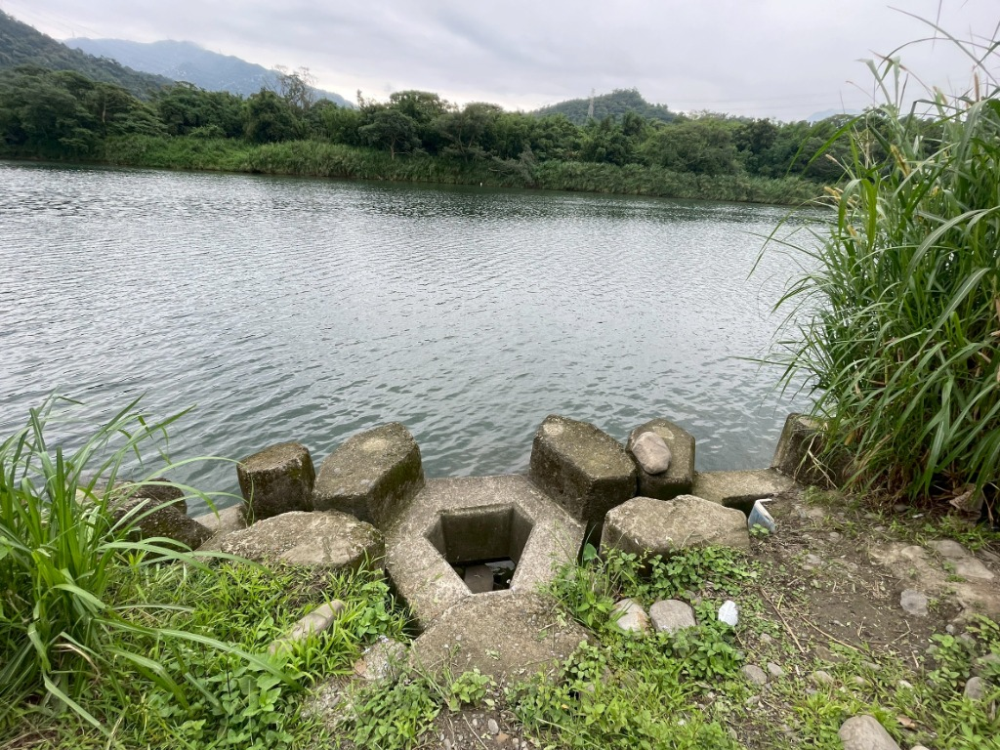

崖邊的摩天嶺：從傾頹房屋到親水綠帶，新店溪畔的防汛變遷錄
文／賴玉芳
一、 懸崖邊的建築奇觀：山河交界處的「摩天嶺」
從新店國小至開天宮一帶的新店路旁，許多房屋緊貼著新店溪畔陡峭的山壁而建。由於地形高低落差極大，形成了一種奇特的視覺對比：從道路這頭望去，它們看似只是一層樓的樸實平房；但若站在河岸抬頭仰望，建築物卻順著山崖深達四至七層樓高。
這種層層堆疊、依山臨水而立的崖邊聚落景觀，因其坡度陡峻又高聳，也被稱為「摩天嶺」，成為新店地區極具特色的難得地景。



二、 驚險的歷史記憶：那一夜，房屋墜入新店溪
在踏查過程中，我們有幸訪談了郭儒鈞里長，聆聽她述說過往在颱風災害中搶救居民，以及爭取防汛建設的艱辛經歷。
時光回溯到2001年，一場強烈颱風無情襲台。新店路47號後方、位於河岸崖邊的四戶民宅，因長期受到溪水劇烈沖刷而導致地基嚴重掏空。伴隨著一聲驚天巨響，整棟房舍在瞬間崩塌，整座墜入下方湍急的新店溪中，沉沒於碧潭和青潭間的水域。這場驚心動魄的墜河事件震驚了地方，也深刻凸顯了沿河聚落長期面臨的地質風險與居住安全問題。

三、 與時間賽跑：緊急撤離與防汛建設的艱難爭取
災害發生當下，郭里長立即展開緊急應變，迅速協助受災居民撤離，並將眾人暫時安置於馬公公園，貼心地提供必要物資與生活照顧。
安頓好居民後，考量到災情可能擴大，郭里長隨即積極向中央爭取修繕經費。她深刻指出，若不趕緊處理，河道中的迴流與持續沖刷將會不斷侵蝕河岸地基，屆時不只沿岸住家岌岌可危，甚至可能危及整條新店路及鄰近新店國小的安全。經過里長多方奔走、高聲疾呼，終於成功促使相關單位正視這項工程的迫切性。

四、 韌性的展現：消波塊護岸與防汛自行車道的誕生
在地方與中央的共同努力下，最終成功爭取到兩千多萬元的緊急搶修經費。工程團隊隨後運來大型消波塊與防汛設施，構築起穩固的擋土牆與堤防系統，有效減緩了水流的無情沖刷，並牢牢穩定住河岸地基。
這項因天災而啟動的緊急防汛工程，不僅守護了居民的生命財產安全，更在無意間奠定了今日新店溪畔連結青潭溪自行車道與親水空間的基礎。從當年的崩塌危機，到今日旅人如織的河岸綠帶，這條景觀廊道見證了地方居民面對天災時的堅韌，以及防災建設與河川治理的珍貴價值。


踏查後記：
透過這次的實地踏查、地景觀察與口述訪談，我們得以從河岸空間的變遷中，看見新店溪與聚落共生的歷史脈絡，也更深刻地理解到——防洪工程、居住安全與地方發展之間，原來有著如此密不可分的血脈關係。